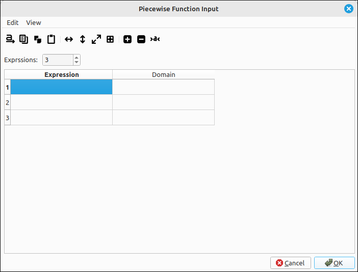
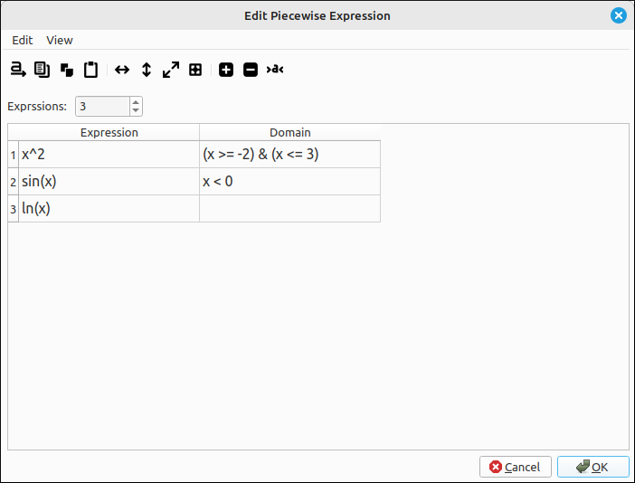
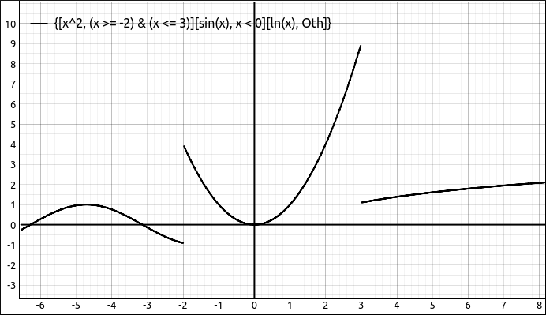
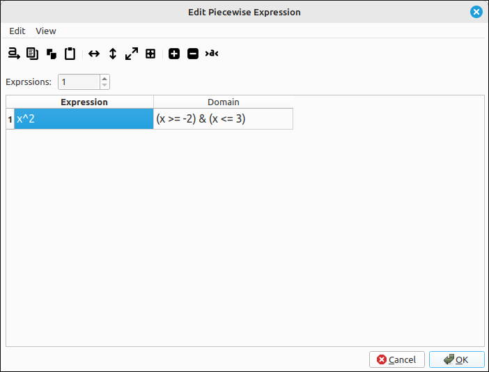
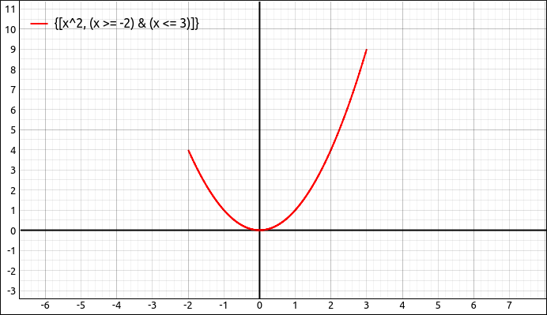
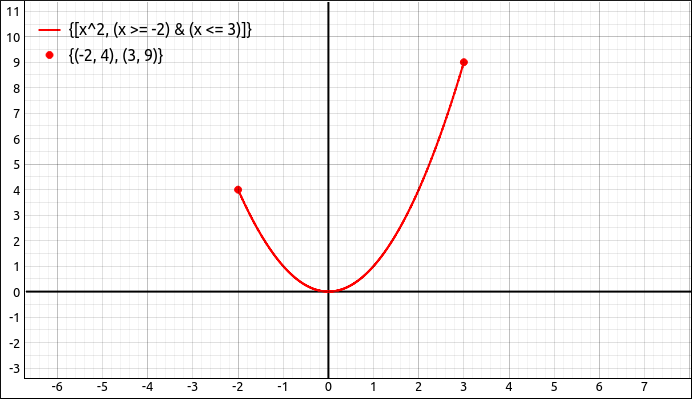

Piecewise Expression Input#
The Piecewise Function Input Dialog Box#
In most computer algebra systems inputting a piecewise defined function uses rather lengthy syntax, SymPy is no exception. So to make these easier for the user we created a special dialog box for this purpose. Select Edit > Input Piecewise Defined Function... from the main menu or its corresponding toolbar button to open the piecewise function input dialog box.

Piecewise Function Input Dialog Box#
Dialog Use & Options#
To use the dialog, select the number of expressions, or pieces, the function is broken down into. In the expression column input any valid expression, see the CLAE Expression Syntax for details on expressions. In the corresponding Domain column, input the logical expression to be tested for that expression. The syntax on the logical expressions is below. Once all the entries are filled out click OK and the expression will be loaded into the CAS workspace.
With a piecewise defined expression the domains do not need to be mutually exclusive. The way it is read is that the first logical expression is tested, if the result is true the first expression is evaluated and the result is returned as the function value. If the first domain condition is false then the second condition is checked, if true the second expression is evaluated and result returned. This continues until a valid domain is found. When inputting the domains you can leave the last one blank and it will be interpreted as an “otherwise” entry (displayed as True).
Piecewise Function Domain Logical Syntax#
Basic Domain Expressions#
The basic domain expressions are single binary logical operators.
>for greater than.>=for greater than or equal to.<for less than.<=for less than or equal to.==for equal to.!=for not equal to.
For example,
x > 3y <= 5x*2*y-1 > 0
Logical Expression Connectors#
Logical expressions can be combined with the standard connectors of and, or, and not. The and connector is done with &, or is done with | and not is done with ~. Also, each basic logical expression needs to be in parentheses.
For example,
(x > -2) & (x <= 5)(x < -2) | (x >= 5)~(x > 2)
You can do more combinations and you can nest logical expressions.
Note
One thing that is a little surprising, especially for those who know a bit of Python programming, is that the syntax of -2 < x <= 5 is not supported. That expression needs to be written as (x > -2) & (x <= 5).
Basic Example#
For a basic example, say we input the following into the dialog box,

Piecewise Function Input Example#
This will create the function,
If we plot this function we get the following graph.

Piecewise Function Graph#
Note that although we defined this expression to be \(\sin(x)\) for \(x < 0\) the function only evaluates to \(\sin(x)\) for \(x < -2\) since the first expression is true for \(-2 <= x <= 3\). Also, the \(\ln(x)\) piece is defaulted to otherwise.
Example of a Domain Restriction#
We can also use a piecewise expression to do a simple domain restriction. For example, if we use a single expression x^2 and the domain (x >= -2) & (x <= 3),

Piecewise Function Domain Restriction#
This comes into the CAS as,
and if we graph it we get the following image.

Domain Restriction Graph#
Note
Notice on the above example that the endpoints are not enhanced like we usually do when displaying a piecewise defined expression. This enhancement is not built into the program but if you are creating an image for a professional document or for a quiz or exam you can manually add these in using a point set object. For example,

Domain Restriction Graph Enhanced#